Google Ads remains one of the most effective digital advertising platforms for businesses looking to generate leads, sales, and revenue. However, simply launching campaigns is not enough. Many advertisers struggle with high costs, low conversion rates, and poor return on ad spend (ROAS) because their campaigns are not fully optimized.
Successful Google Ads campaigns require continuous monitoring, testing, and improvement. Small changes to keywords, ad copy, landing pages, bidding strategies, and conversion tracking can significantly improve performance over time.
This Google Ads optimization checklist covers 25 proven techniques that can help you improve campaign performance, reduce wasted ad spend, increase conversion rates, and maximize your return on investment in 2026.
Table of Contents
Why Google Ads Optimization Is Important
Google Ads optimization helps businesses:
- Improve return on ad spend (ROAS)
- Increase conversion rates
- Reduce cost per click (CPC)
- Improve Quality Score
- Generate more qualified leads
- Reduce wasted advertising budget
- Scale profitable campaigns
Without optimization, businesses often spend money on irrelevant clicks, poorly targeted audiences, and underperforming keywords.
Campaign Structure Optimization
1. Organize Campaigns by Business Goals
Each campaign should have a clear objective. Examples include lead generation, product sales, brand awareness, website traffic, and remarketing. Separate campaigns make it easier to analyze performance and allocate budgets effectively.
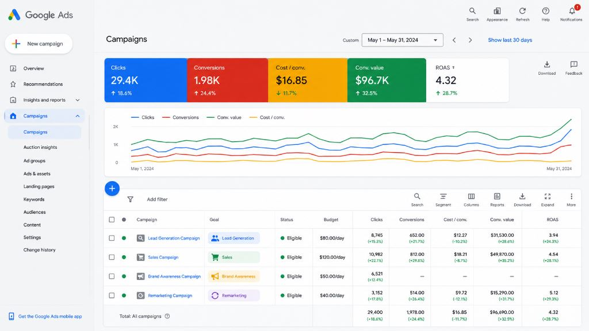
Figure: Structuring Google Ads campaigns based on business goals helps allocate budget and analyze ROAS metrics accurately.
2. Separate Search and Display Campaigns
Search campaigns target users actively searching for solutions, while Display campaigns focus on awareness and audience targeting. Combining both often makes reporting difficult and can reduce campaign efficiency.
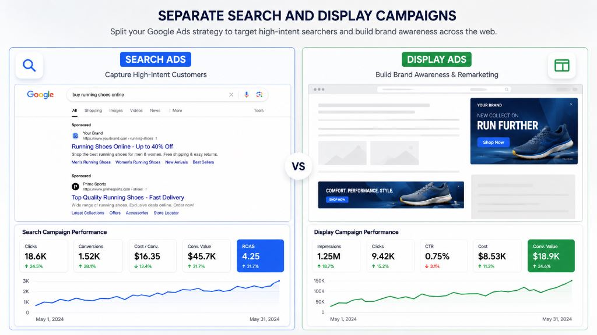
Figure: Splitting search and display campaigns targets high-intent searchers and drives remarketing/awareness separately, improving conversion metrics.
3. Create Highly Relevant Ad Groups
Group similar keywords together. For example, in an SEO Services campaign, separate your consulting keywords (e.g. "SEO Consultant", "SEO Expert") into one ad group, and local services (e.g. "Local SEO Services", "Local SEO Agency") into another. This improves ad relevance and Quality Score.
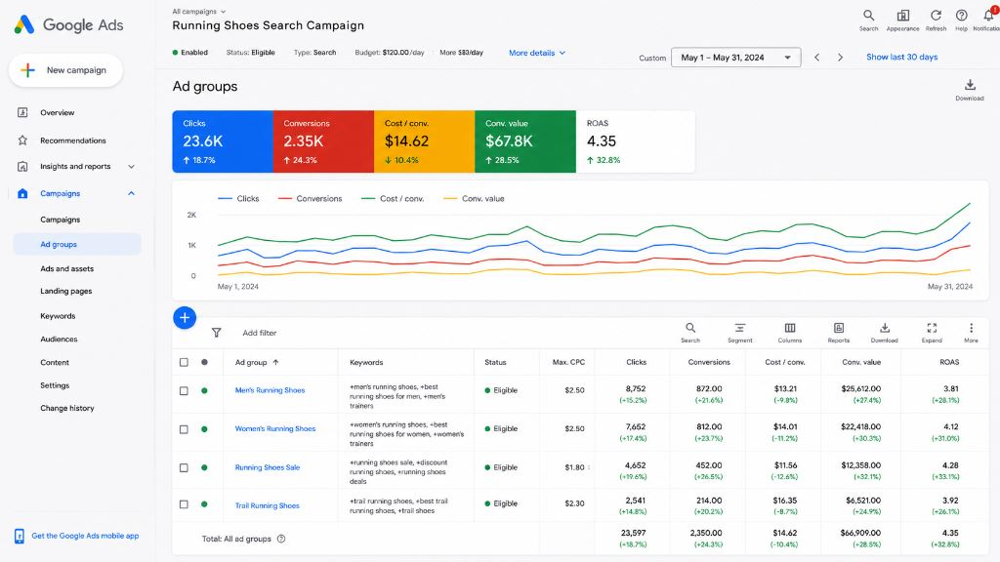
Figure: Structuring ad groups around specific themes with highly relevant keywords increases click-through rates and elevates Quality Scores.
4. Limit Keywords Per Ad Group
Avoid adding too many keywords to a single ad group. Smaller, focused ad groups improve ad relevance, click-through rate (CTR), Quality Score, and conversion rate.
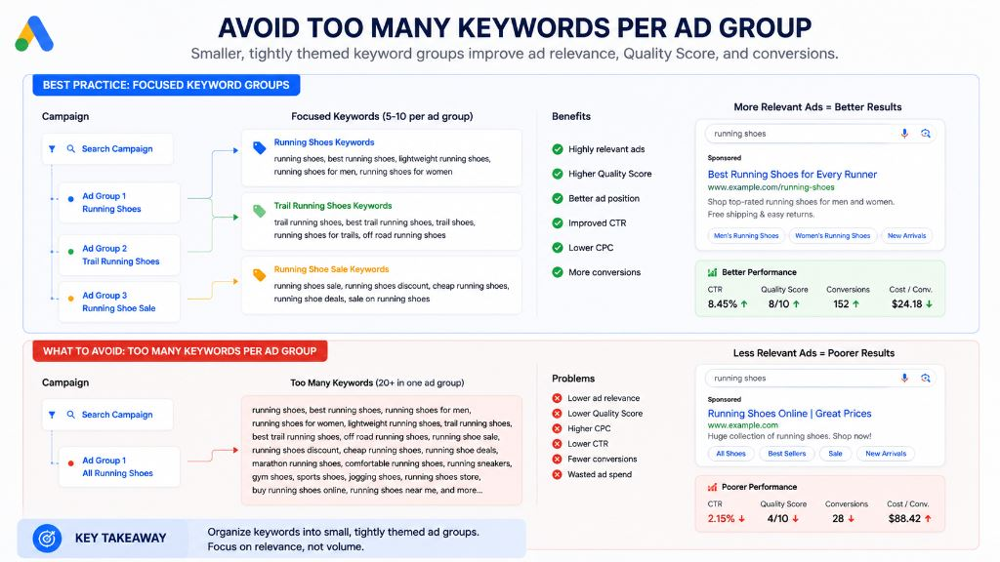
Figure: Focused keyword groups (5-10 per ad group) produce higher Quality Scores, improved CTRs, and lower CPCs compared to ad groups packed with too many keywords.
Keyword Optimization
5. Conduct Keyword Research Regularly
Keyword trends change constantly. Use tools such as Google Keyword Planner, Ahrefs, SEMrush, and Ubersuggest. Look for new opportunities and remove outdated keywords.
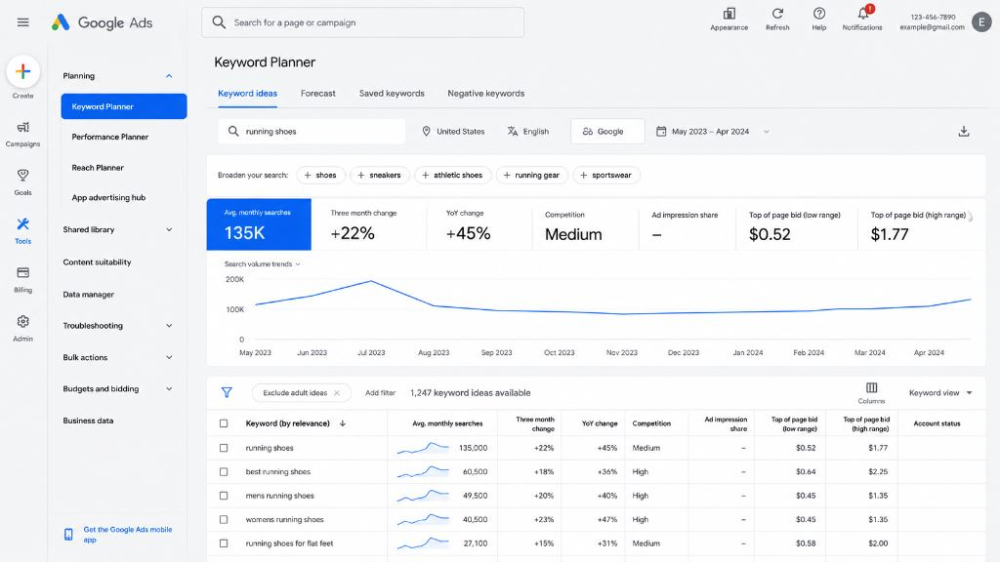
Figure: Using Google Keyword Planner regularly helps identify keyword volume trends, average monthly search variations, and competitive top-of-page bids.
6. Add Negative Keywords
Negative keywords prevent irrelevant traffic. Review search term reports regularly and add new negative keywords like "free", "jobs", "training", "course", or "PDF" if they do not align with your business objectives.
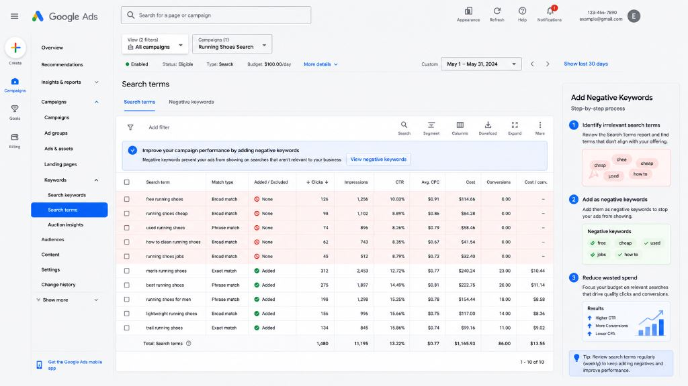
Figure: Regular review of search terms allows excluding low-intent queries as negative keywords, conserving campaign budget.
7. Focus on High Intent Keywords
High intent keywords generally produce better conversions. Focus on commercial keywords such as "Buy SEO Services", "Google Ads Consultant Near Me", and "PPC Management Company". These users are closer to making a purchase decision.
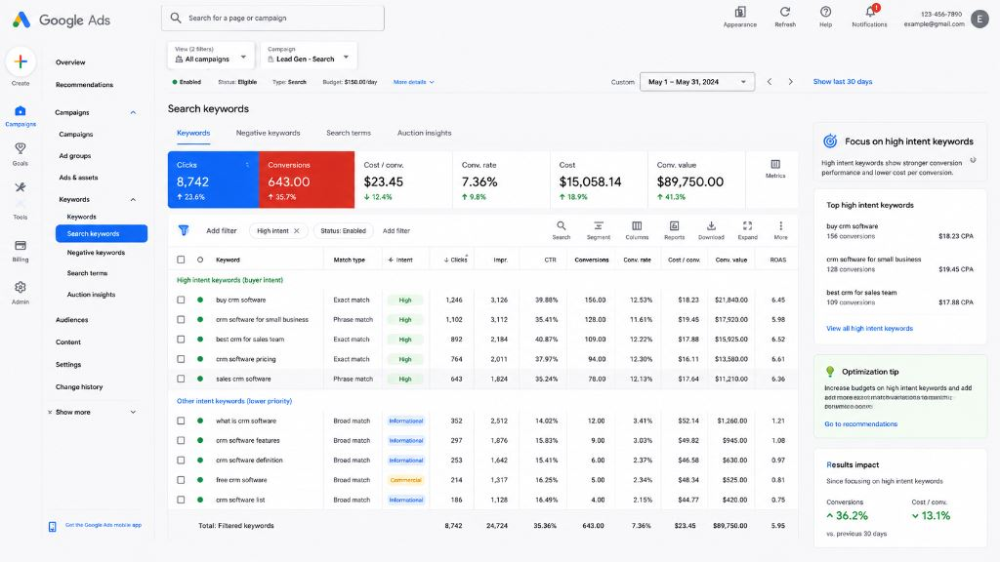
Figure: Filtering search keywords by buyer intent helps focus budget allocation on highly commercial queries that yield stronger conversion values.
8. Remove Underperforming Keywords
Pause keywords that generate high spend, low CTR, and no conversions. Focus your budget on keywords that deliver profitable results.
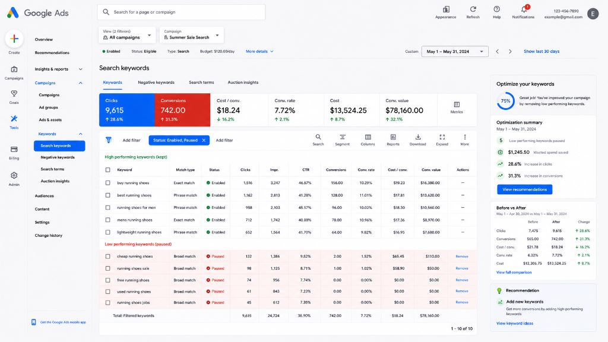
Figure: Monitoring and pausing low-performing keywords (high cost, low CTR, zero conversions) stops budget leaks and raises overall ROAS.
9. Monitor Search Term Reports
Search term reports reveal new keyword opportunities, negative keyword options, and user intent insights. Review these reports weekly to refine targeting.
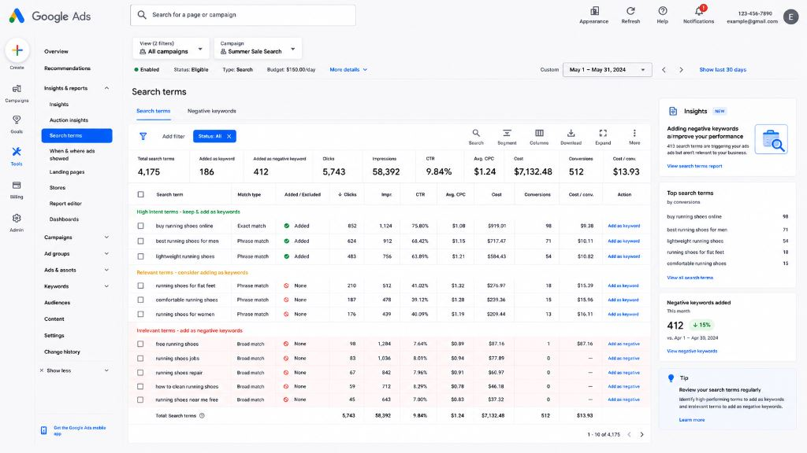
Figure: Reviewing search term reports categorizes user queries into high intent keywords to add, and irrelevant terms to exclude.
Ad Copy Optimization
10. Write Compelling Headlines
Your headline is the first thing users notice. Strong headlines should include target keywords, address user intent, and highlight core benefits.
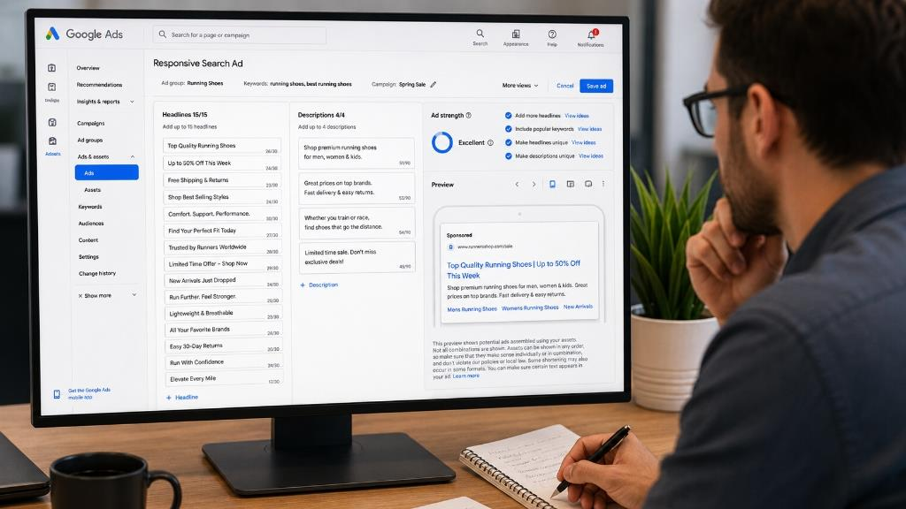
Figure: Writing multiple relevant headlines (up to 15) allows Google to dynamically assemble and serve the most compelling ad variation to users.
11. Include Keywords in Ad Copy
Keyword relevance improves Quality Score, CTR, and overall ad relevance. Match user searches as closely as possible within your headlines and descriptions.
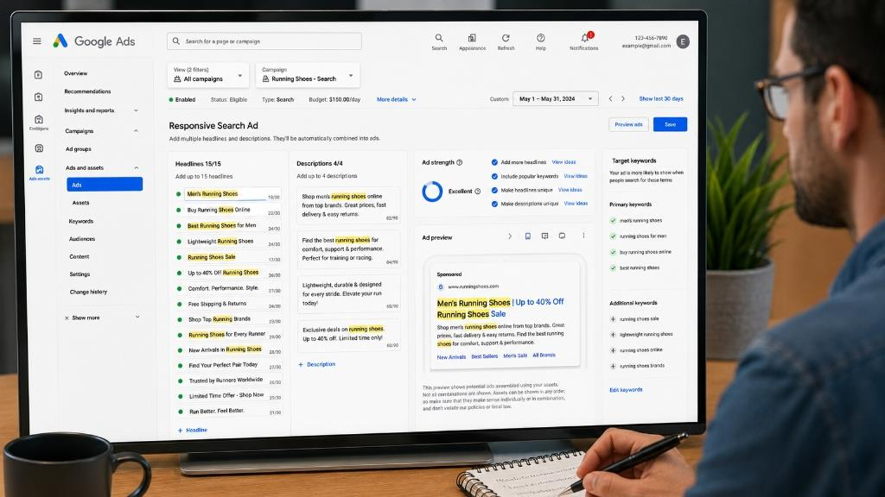
Figure: Including primary and additional keywords in both headlines and descriptions aligns the ad copy with user intent to improve click-through rates.
12. Highlight Benefits, Not Features
Users care about outcomes. Instead of "24/7 Support", use "Get Expert Help Anytime You Need It" to focus on the value provided to the user.
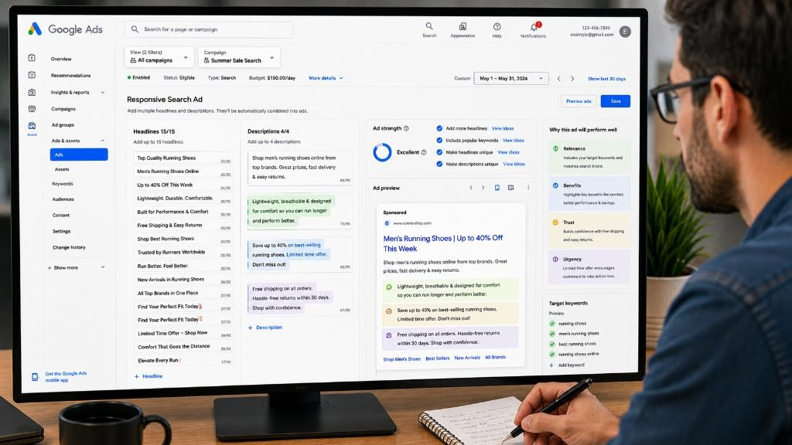
Figure: Focusing ad descriptions on user-centric benefits, trust factors, and urgency increases engagement compared to listing generic product features.
13. Add Clear Calls to Action
Clear calls to action improve conversion rates. Use direct directives like "Get a Free Quote", "Book a Consultation", "Call Now", or "Start Today".
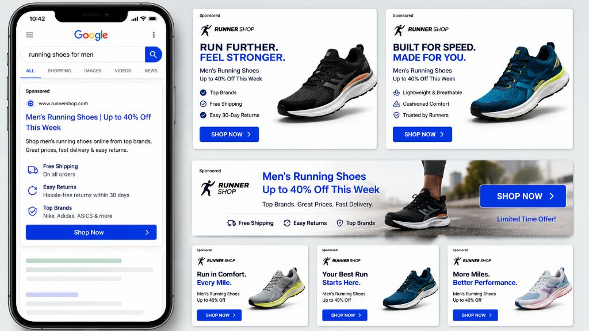
Figure: Utilizing clear, action-oriented calls to action (like 'SHOP NOW') on responsive mobile search results and desktop display banners drives immediate clicks.
14. Test Multiple Ad Variations
Continuous testing helps identify top-performing ads. Routinely test different headlines, descriptions, calls to action, and promotions. Never stop testing.
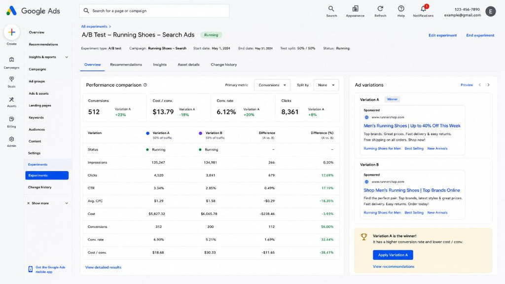
Figure: Running A/B performance experiments compares ad variations (Variation A vs Variation B) to determine the winning conversion rate and cost per conversion.
Landing Page Optimization
15. Match Landing Pages to Keywords
Users should land on a page directly related to their search query. Better relevance improves conversion rates, user experience, and Quality Score.
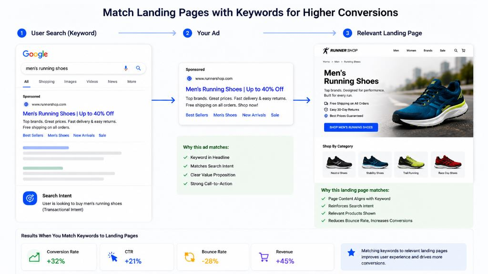
Figure: Structuring a direct flow from User Search Keyword to Ad Copy to a relevant Landing Page reduces bounce rates and drives up to 32% higher conversion rates.
16. Improve Page Speed
Slow pages hurt conversions. A fast-loading landing page improves user experience, conversion rate, and Quality Score while lowering your average CPC.
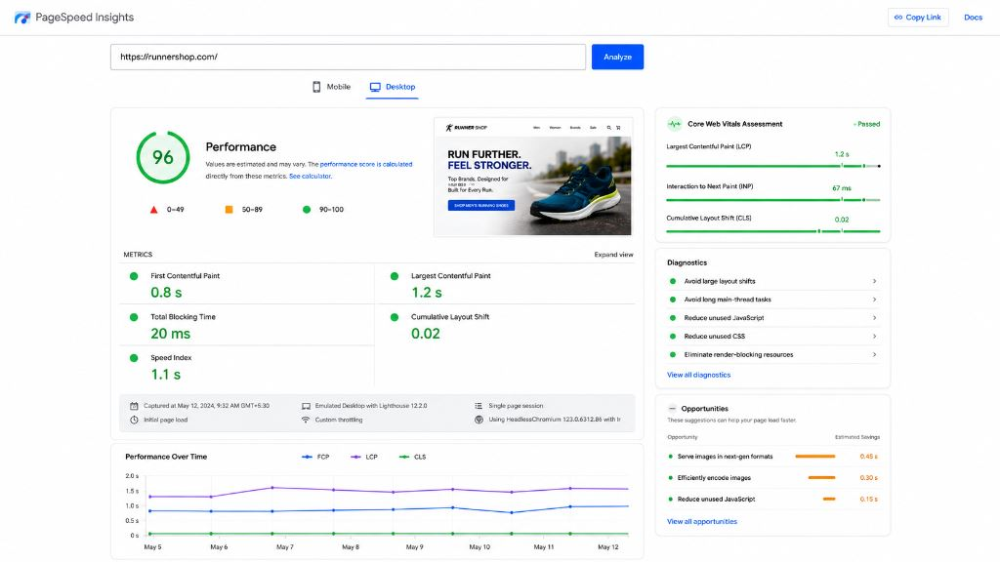
Figure: Verifying Core Web Vitals and performance scores using Google PageSpeed Insights ensures fast page load speeds and better ad quality rankings.
17. Optimize for Mobile Users
Most Google Ads traffic comes from mobile devices. Ensure mobile-friendly design, fast loading times, and easy checkout or signup flows.
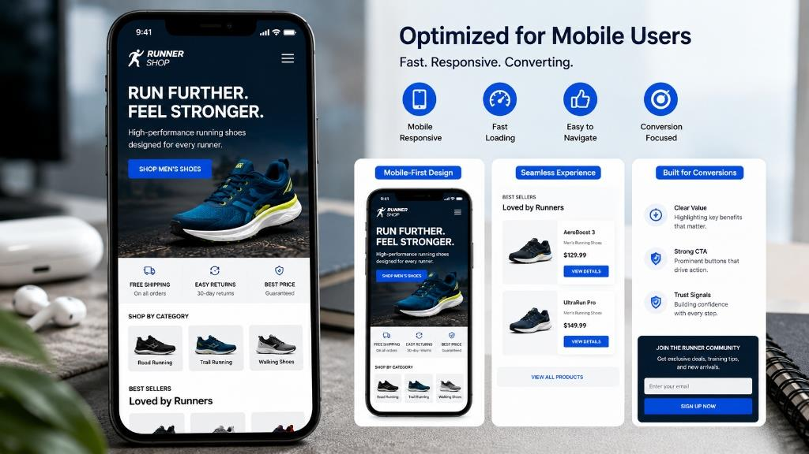
Figure: Designing mobile-first, responsive layouts with fast loading and easy navigation elements maximizes paid traffic conversions from smartphones.
18. Simplify Conversion Forms
Ask only for essential information. Shorter forms generally generate more leads and reduce form abandonment rates.
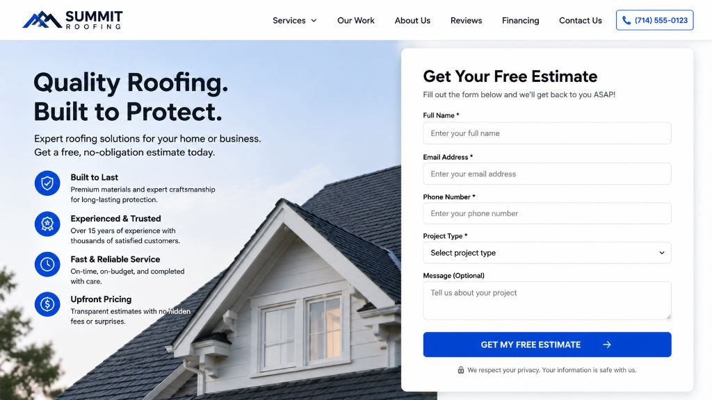
Figure: Streamlining conversion forms to ask for only basic information (Name, Email, Phone, and Project Details) reduces user friction and increases lead submissions.
19. Add Trust Signals
Incorporate customer reviews, testimonials, certifications, industry awards, and client logos on landing pages to help increase conversions and build credibility.
Figure: Placing customer testimonials, reviews, security badges, trust ratings, and media mentions on landing pages builds strong credibility and increases conversions.
Conversion Tracking Optimization
20. Set Up Conversion Tracking Correctly
Track form submissions, phone calls, purchases, WhatsApp clicks, and lead generation events. Without tracking, campaign optimization is simply guesswork.
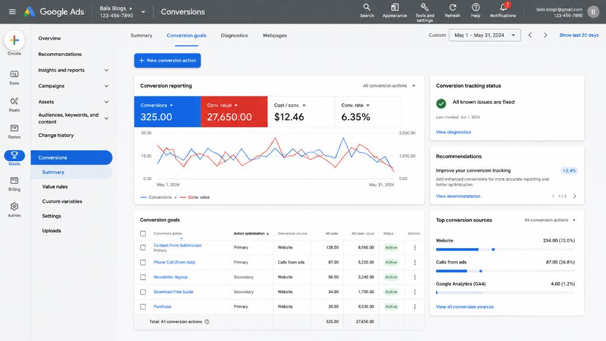
Figure: Setting up primary conversion actions (e.g. Contact Form Submissions, Phone Calls, and Purchases) in Google Ads tracks precise conversion value and cost metrics.
21. Track Micro Conversions
Track micro conversions like button clicks, PDF downloads, and newsletter signups to identify user engagement patterns and optimize the customer journey.
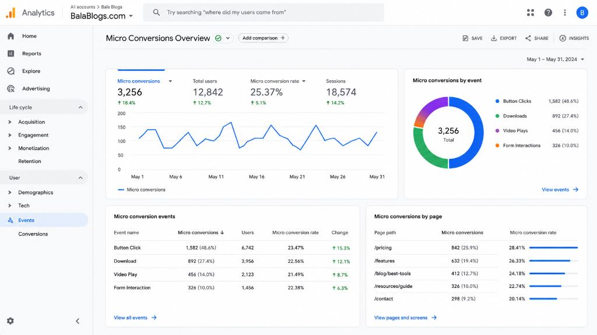
Figure: Monitoring micro conversions in Google Analytics"such as newsletter signups, downloads, and video plays"helps map user engagement paths.
Bid and Budget Optimization
22. Review Device Performance
Compare performance across mobile, desktop, and tablet viewports. Adjust device bid adjustments based on where you get the best conversion rates.
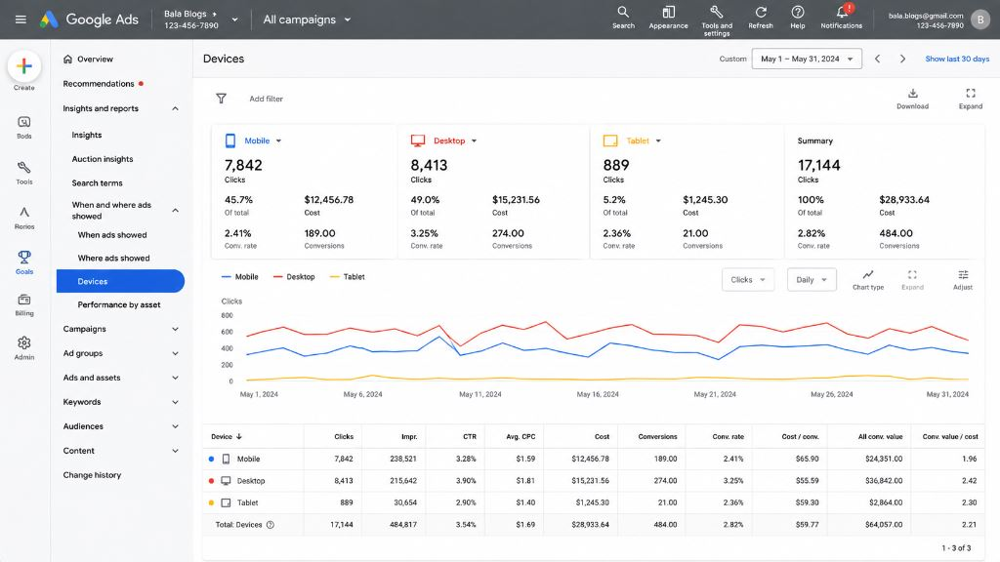
Figure: Auditing device performance metrics (clicks, cost, conversions, and conversion rates across Mobile, Desktop, and Tablet) allows for smart bid adjustments.
23. Optimize Geographic Targeting
Identify locations generating the best results and allocate more budget or set positive bid adjustments for those high-performing regions.
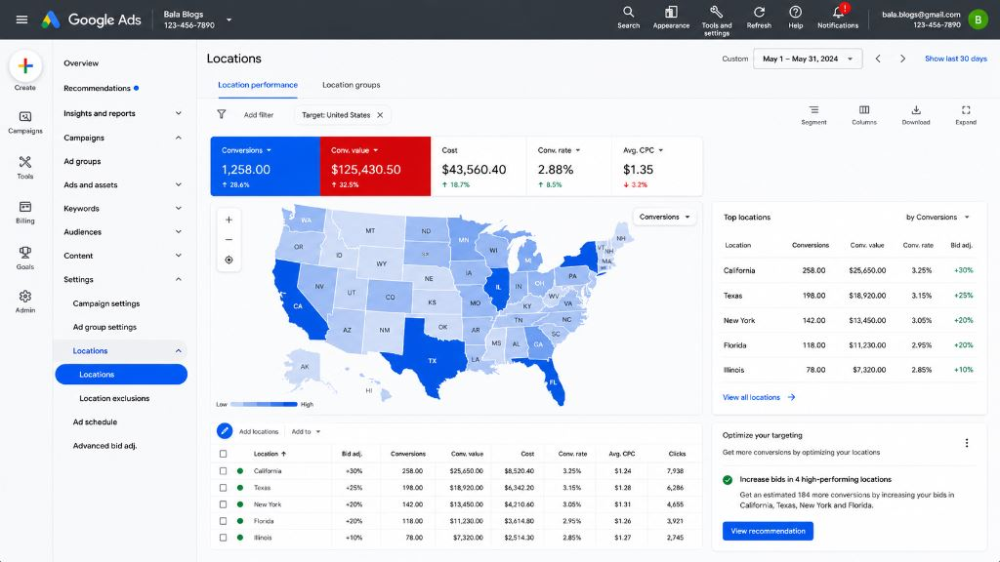
Figure: Analyzing location performance maps allows setting positive bid adjustments (e.g. +30% for California) to focus budget on high-converting regions.
24. Use Smart Bidding Strategically
Choose a smart bidding strategy aligned with your objectives, such as Maximize Conversions, Target CPA (tCPA), Target ROAS (tROAS), or Maximize Conversion Value.
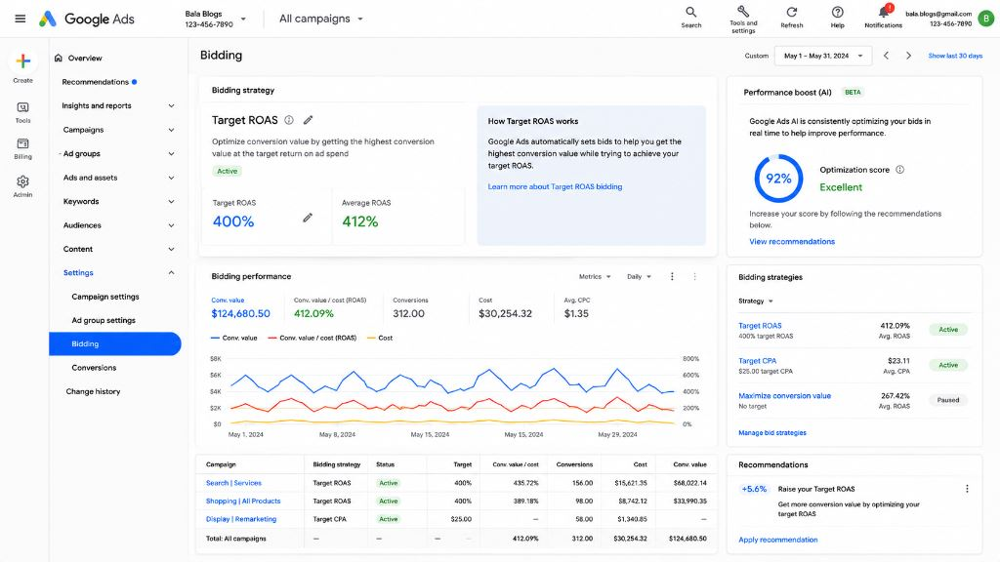
Figure: Aligning bidding strategies with specific goals"like using Target ROAS (tROAS) or Target CPA (tCPA)"leverages Google's machine learning to optimize bids.
25. Increase Budget for Winning Campaigns
Once a campaign consistently generates profitable conversions, consider increasing its budget gradually to scale performance.
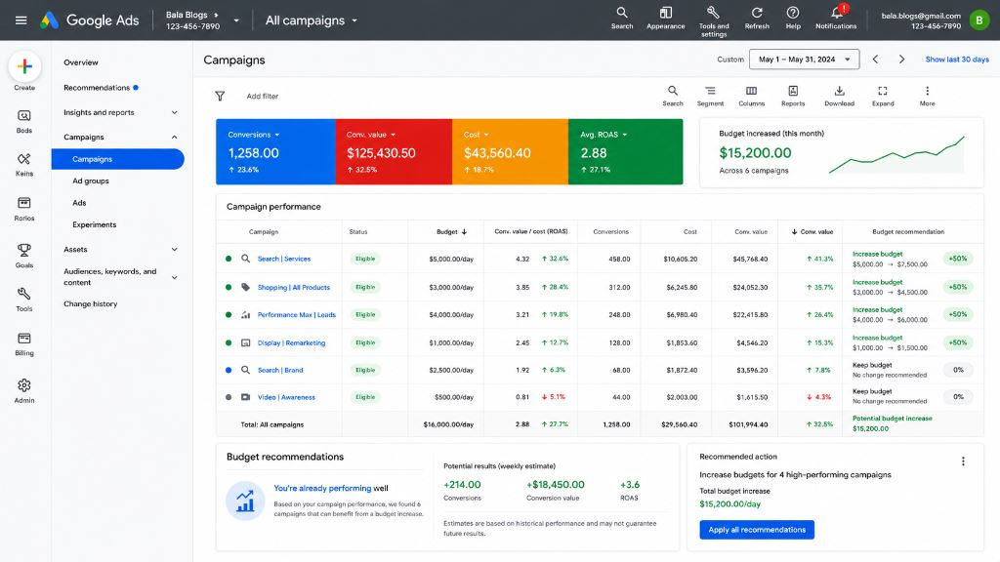
Figure: Incrementally increasing campaign budgets for high-performing search and shopping assets maximizes the volume of profitable conversion actions.
Balamurugan P's ROAS Tip
ROAS is a function of both your conversion rate and lead value. Don't just focus on lowering CPCs; invest in optimizing your landing page copy and speed. A high-converting page raises Quality Scores, reducing costs and maximizing return on ad spend automatically.
Common Google Ads Mistakes to Avoid
Many advertisers make avoidable mistakes that reduce profitability. Common mistakes include:
- Ignoring negative keywords
- Poor landing page experience
- Weak ad copy
- Missing conversion tracking
- Broad targeting
- Sending traffic to the homepage
- Not analyzing campaign data
Avoiding these issues can significantly improve your paid marketing results.
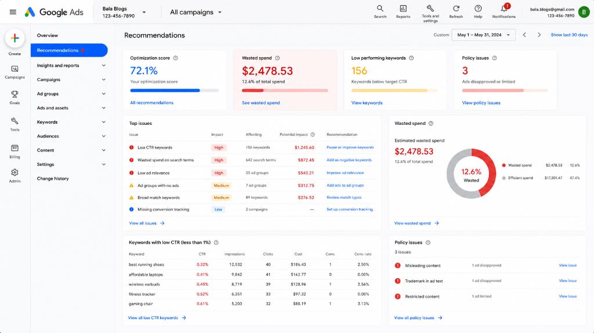
Figure: Reviewing recommendations and identifying source issues helps reduce wasted spend on low-CTR keywords and poor ad relevance.
Google Ads Optimization Checklist Summary
- Organize campaigns by objective
- Separate Search and Display campaigns
- Improve ad group relevance
- Conduct regular keyword research
- Add negative keywords
- Focus on high-intent keywords
- Monitor search term reports
- Improve ad copy
- Optimize landing pages
- Improve page speed
- Optimize for mobile users
- Set up conversion tracking
- Track micro conversions
- Review device performance
- Optimize geographic targeting
- Use smart bidding strategies
- Scale profitable campaigns
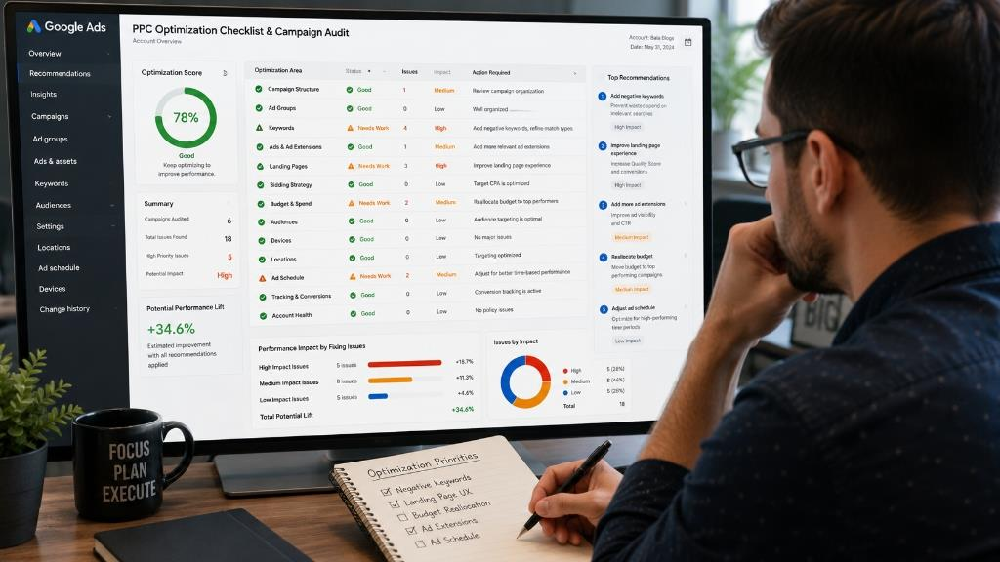
Figure: Running a comprehensive checklist audit across all campaigns ensures optimization priorities"such as landing page UX, ad extensions, and negative keywords"are systematically addressed.
Final Thoughts
Google Ads optimization is an ongoing process. The most successful advertisers consistently test, analyze, and improve their campaigns based on real performance data.
By implementing the strategies in this checklist, you can improve campaign efficiency, reduce wasted ad spend, increase conversion rates, and maximize ROAS in 2026.
Even small improvements across keywords, ad copy, landing pages, bidding strategies, and tracking can produce significant long-term results.
Frequently Asked Questions
You should review campaigns weekly for budget pacing, negative keywords, and basic alerts, and perform detailed, structural optimization on a monthly basis.
A good ROAS depends on your industry and profit margins, but a 4:1 ROAS (meaning $4 revenue generated for every $1 spent) is generally considered a solid benchmark for profitability.
Improve your Quality Score by writing highly relevant ads, targeting precise keywords, and optimizing your landing page speed and mobile experience.
Conversions and ROAS are typically the most important metrics because they directly calculate the campaign's business impact and profitability.